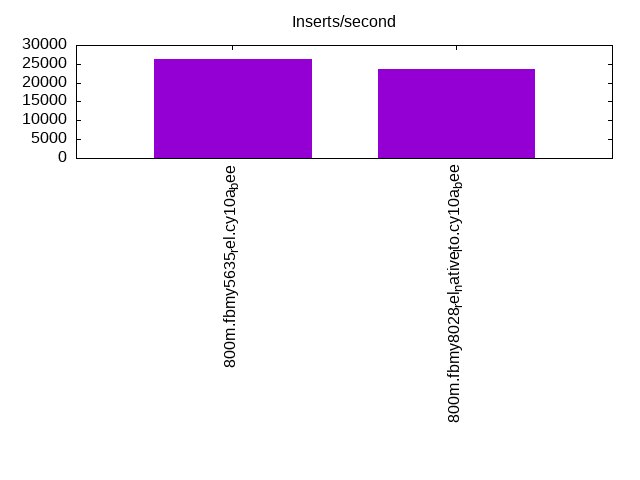

This is a report for the insert benchmark with 800M docs and 1 client(s). It is generated by scripts (bash, awk, sed) and Tufte might not be impressed. An overview of the insert benchmark is here and a short update is here. Below, by DBMS, I mean DBMS+version.config. An example is my8020.c10b40 where my means MySQL, 8020 is version 8.0.20 and c10b40 is the name for the configuration file.
The test server has 8 AMD cores, 16G RAM and an NVMe SSD. It is described here as the Beelink. The benchmark was run with 1 client and there were 1 or 3 connections per client (1 for queries or inserts without rate limits, 1+1 for rate limited inserts+deletes). It uses 1 table. It loads 800M rows per table without secondary indexes, creates secondary indexes, then inserts 50M rows per table with a delete per insert to avoid growing the table. It then does 3 read+write tests for 1800s each that do queries as fast as possible with 100, 500 and then 1000 inserts/second/client concurrent with the queries and 1000 deletes/second to avoid growing the table. The database is larger than memory. Clients and the DBMS share one server. The per-database configs are in the per-database subdirectories here.
The tested DBMS are:
The numbers are inserts/s for l.i0 and l.i1, indexed docs (or rows) /s for l.x and queries/s for q*.2. The values are the average rate over the entire test for inserts (IPS) and queries (QPS). The range of values for IPS and QPS is split into 3 parts: bottom 25%, middle 50%, top 25%. Values in the bottom 25% have a red background, values in the top 25% have a green background and values in the middle have no color. A gray background is used for values that can be ignored because the DBMS did not sustain the target insert rate. Red backgrounds are not used when the minimum value is within 80% of the max value.
| dbms | l.i0 | l.x | l.i1 | q100.1 | q500.1 | q1000.1 |
|---|---|---|---|---|---|---|
| 800m.fbmy5635_rel.cy10a_bee | 77527 | 76528 | 26288 | 1887 | 1839 | 1881 |
| 800m.fbmy8028_rel_native_lto.cy10a_bee | 60469 | 74138 | 23719 | 1938 | 1820 | 1850 |
This table has relative throughput, throughput for the DBMS relative to the DBMS in the first line, using the absolute throughput from the previous table.
| dbms | l.i0 | l.x | l.i1 | q100.1 | q500.1 | q1000.1 |
|---|---|---|---|---|---|---|
| 800m.fbmy5635_rel.cy10a_bee | 1.00 | 1.00 | 1.00 | 1.00 | 1.00 | 1.00 |
| 800m.fbmy8028_rel_native_lto.cy10a_bee | 0.78 | 0.97 | 0.90 | 1.03 | 0.99 | 0.98 |
This lists the average rate of inserts/s for the tests that do inserts concurrent with queries. For such tests the query rate is listed in the table above. The read+write tests are setup so that the insert rate should match the target rate every second. Cells that are not at least 95% of the target have a red background to indicate a failure to satisfy the target.
| dbms | q100.1 | q500.1 | q1000.1 |
|---|---|---|---|
| fbmy5635_rel.cy10a_bee | 100 | 499 | 998 |
| fbmy8028_rel_native_lto.cy10a_bee | 100 | 499 | 998 |
| target | 100 | 500 | 1000 |
l.i0: load without secondary indexes. Graphs for performance per 1-second interval are here.
Average throughput:
Insert response time histogram: each cell has the percentage of responses that take <= the time in the header and max is the max response time in seconds. For the max column values in the top 25% of the range have a red background and in the bottom 25% of the range have a green background. The red background is not used when the min value is within 80% of the max value.
| dbms | 256us | 1ms | 4ms | 16ms | 64ms | 256ms | 1s | 4s | 16s | gt | max |
|---|---|---|---|---|---|---|---|---|---|---|---|
| fbmy5635_rel.cy10a_bee | 99.868 | 0.128 | 0.004 | nonzero | 0.089 | ||||||
| fbmy8028_rel_native_lto.cy10a_bee | 99.731 | 0.193 | 0.073 | 0.003 | 0.105 |
Performance metrics for the DBMS listed above. Some are normalized by throughput, others are not. Legend for results is here.
ips qps rps rmbps wps wmbps rpq rkbpq wpi wkbpi csps cpups cspq cpupq dbgb1 dbgb2 rss maxop p50 p99 tag 77527 0 0 0.0 42.3 13.9 0.000 0.000 0.001 0.184 7682 22.5 0.099 23 25.1 25.7 1.5 0.089 77810 72018 800m.fbmy5635_rel.cy10a_bee 60469 0 0 0.0 47.2 13.9 0.000 0.000 0.001 0.236 6368 22.7 0.105 30 25.1 25.9 2.0 0.105 60531 54838 800m.fbmy8028_rel_native_lto.cy10a_bee
l.x: create secondary indexes.
Average throughput:
Performance metrics for the DBMS listed above. Some are normalized by throughput, others are not. Legend for results is here.
ips qps rps rmbps wps wmbps rpq rkbpq wpi wkbpi csps cpups cspq cpupq dbgb1 dbgb2 rss maxop p50 p99 tag 76528 0 96 16.0 30.9 11.4 0.001 0.214 0.000 0.153 346 11.7 0.005 12 51.0 51.6 8.6 0.008 NA NA 800m.fbmy5635_rel.cy10a_bee 74138 0 93 15.5 29.7 10.8 0.001 0.215 0.000 0.150 501 11.7 0.007 13 51.0 51.8 10.4 0.013 NA NA 800m.fbmy8028_rel_native_lto.cy10a_bee
l.i1: continue load after secondary indexes created. Graphs for performance per 1-second interval are here.
Average throughput:
Insert response time histogram: each cell has the percentage of responses that take <= the time in the header and max is the max response time in seconds. For the max column values in the top 25% of the range have a red background and in the bottom 25% of the range have a green background. The red background is not used when the min value is within 80% of the max value.
| dbms | 256us | 1ms | 4ms | 16ms | 64ms | 256ms | 1s | 4s | 16s | gt | max |
|---|---|---|---|---|---|---|---|---|---|---|---|
| fbmy5635_rel.cy10a_bee | 99.796 | 0.199 | 0.005 | 0.001 | 0.078 | ||||||
| fbmy8028_rel_native_lto.cy10a_bee | 99.667 | 0.327 | 0.003 | 0.002 | 0.084 |
Delete response time histogram: each cell has the percentage of responses that take <= the time in the header and max is the max response time in seconds. For the max column values in the top 25% of the range have a red background and in the bottom 25% of the range have a green background. The red background is not used when the min value is within 80% of the max value.
| dbms | 256us | 1ms | 4ms | 16ms | 64ms | 256ms | 1s | 4s | 16s | gt | max |
|---|---|---|---|---|---|---|---|---|---|---|---|
| fbmy5635_rel.cy10a_bee | 99.763 | 0.228 | 0.009 | 0.001 | 0.077 | ||||||
| fbmy8028_rel_native_lto.cy10a_bee | 99.655 | 0.335 | 0.009 | 0.002 | 0.097 |
Performance metrics for the DBMS listed above. Some are normalized by throughput, others are not. Legend for results is here.
ips qps rps rmbps wps wmbps rpq rkbpq wpi wkbpi csps cpups cspq cpupq dbgb1 dbgb2 rss maxop p50 p99 tag 26288 0 268 12.2 138.8 53.4 0.010 0.473 0.005 2.082 11658 47.9 0.443 146 57.0 58.4 8.4 0.078 26371 22524 800m.fbmy5635_rel.cy10a_bee 23719 0 236 10.9 136.5 48.6 0.010 0.472 0.006 2.097 10768 46.3 0.454 156 57.4 58.9 8.9 0.084 23824 20777 800m.fbmy8028_rel_native_lto.cy10a_bee
q100.1: range queries with 100 insert/s per client. Graphs for performance per 1-second interval are here.
Average throughput:
Query response time histogram: each cell has the percentage of responses that take <= the time in the header and max is the max response time in seconds. For max values in the top 25% of the range have a red background and in the bottom 25% of the range have a green background. The red background is not used when the min value is within 80% of the max value.
| dbms | 256us | 1ms | 4ms | 16ms | 64ms | 256ms | 1s | 4s | 16s | gt | max |
|---|---|---|---|---|---|---|---|---|---|---|---|
| fbmy5635_rel.cy10a_bee | 3.005 | 94.401 | 2.577 | 0.016 | nonzero | nonzero | 0.067 | ||||
| fbmy8028_rel_native_lto.cy10a_bee | 1.416 | 95.411 | 3.172 | 0.001 | nonzero | 0.057 |
Insert response time histogram: each cell has the percentage of responses that take <= the time in the header and max is the max response time in seconds. For max values in the top 25% of the range have a red background and in the bottom 25% of the range have a green background. The red background is not used when the min value is within 80% of the max value.
| dbms | 256us | 1ms | 4ms | 16ms | 64ms | 256ms | 1s | 4s | 16s | gt | max |
|---|---|---|---|---|---|---|---|---|---|---|---|
| fbmy5635_rel.cy10a_bee | 99.417 | 0.583 | 0.009 | ||||||||
| fbmy8028_rel_native_lto.cy10a_bee | 99.444 | 0.556 | 0.012 |
Delete response time histogram: each cell has the percentage of responses that take <= the time in the header and max is the max response time in seconds. For max values in the top 25% of the range have a red background and in the bottom 25% of the range have a green background. The red background is not used when the min value is within 80% of the max value.
| dbms | 256us | 1ms | 4ms | 16ms | 64ms | 256ms | 1s | 4s | 16s | gt | max |
|---|---|---|---|---|---|---|---|---|---|---|---|
| fbmy5635_rel.cy10a_bee | 90.778 | 9.111 | 0.111 | 0.017 | |||||||
| fbmy8028_rel_native_lto.cy10a_bee | 99.111 | 0.889 | 0.014 |
Performance metrics for the DBMS listed above. Some are normalized by throughput, others are not. Legend for results is here.
ips qps rps rmbps wps wmbps rpq rkbpq wpi wkbpi csps cpups cspq cpupq dbgb1 dbgb2 rss maxop p50 p99 tag 100 1887 559 8.0 12.8 3.5 0.296 4.319 0.128 35.924 8284 14.7 4.389 623 55.7 57.0 8.6 0.067 1854 1342 800m.fbmy5635_rel.cy10a_bee 100 1938 619 8.9 12.9 3.5 0.319 4.695 0.129 35.952 8652 14.7 4.464 607 55.6 57.2 9.5 0.057 1998 1151 800m.fbmy8028_rel_native_lto.cy10a_bee
q500.1: range queries with 500 insert/s per client. Graphs for performance per 1-second interval are here.
Average throughput:
Query response time histogram: each cell has the percentage of responses that take <= the time in the header and max is the max response time in seconds. For max values in the top 25% of the range have a red background and in the bottom 25% of the range have a green background. The red background is not used when the min value is within 80% of the max value.
| dbms | 256us | 1ms | 4ms | 16ms | 64ms | 256ms | 1s | 4s | 16s | gt | max |
|---|---|---|---|---|---|---|---|---|---|---|---|
| fbmy5635_rel.cy10a_bee | 0.737 | 99.170 | 0.078 | 0.016 | nonzero | 0.030 | |||||
| fbmy8028_rel_native_lto.cy10a_bee | 0.215 | 99.364 | 0.416 | 0.004 | 0.010 |
Insert response time histogram: each cell has the percentage of responses that take <= the time in the header and max is the max response time in seconds. For max values in the top 25% of the range have a red background and in the bottom 25% of the range have a green background. The red background is not used when the min value is within 80% of the max value.
| dbms | 256us | 1ms | 4ms | 16ms | 64ms | 256ms | 1s | 4s | 16s | gt | max |
|---|---|---|---|---|---|---|---|---|---|---|---|
| fbmy5635_rel.cy10a_bee | 99.722 | 0.278 | 0.009 | ||||||||
| fbmy8028_rel_native_lto.cy10a_bee | 99.600 | 0.394 | 0.006 | 0.017 |
Delete response time histogram: each cell has the percentage of responses that take <= the time in the header and max is the max response time in seconds. For max values in the top 25% of the range have a red background and in the bottom 25% of the range have a green background. The red background is not used when the min value is within 80% of the max value.
| dbms | 256us | 1ms | 4ms | 16ms | 64ms | 256ms | 1s | 4s | 16s | gt | max |
|---|---|---|---|---|---|---|---|---|---|---|---|
| fbmy5635_rel.cy10a_bee | 97.289 | 2.694 | 0.017 | 0.017 | |||||||
| fbmy8028_rel_native_lto.cy10a_bee | 98.739 | 1.256 | 0.006 | 0.017 |
Performance metrics for the DBMS listed above. Some are normalized by throughput, others are not. Legend for results is here.
ips qps rps rmbps wps wmbps rpq rkbpq wpi wkbpi csps cpups cspq cpupq dbgb1 dbgb2 rss maxop p50 p99 tag 499 1839 62 1.5 7.5 1.6 0.034 0.832 0.015 3.281 7310 13.5 3.976 587 55.7 57.2 8.6 0.030 1806 1662 800m.fbmy5635_rel.cy10a_bee 499 1820 65 1.2 7.0 1.4 0.036 0.696 0.014 2.831 7411 13.8 4.072 607 55.7 57.4 9.2 0.010 1790 1534 800m.fbmy8028_rel_native_lto.cy10a_bee
q1000.1: range queries with 1000 insert/s per client. Graphs for performance per 1-second interval are here.
Average throughput:
Query response time histogram: each cell has the percentage of responses that take <= the time in the header and max is the max response time in seconds. For max values in the top 25% of the range have a red background and in the bottom 25% of the range have a green background. The red background is not used when the min value is within 80% of the max value.
| dbms | 256us | 1ms | 4ms | 16ms | 64ms | 256ms | 1s | 4s | 16s | gt | max |
|---|---|---|---|---|---|---|---|---|---|---|---|
| fbmy5635_rel.cy10a_bee | 0.966 | 98.918 | 0.112 | 0.004 | 0.012 | ||||||
| fbmy8028_rel_native_lto.cy10a_bee | 0.285 | 98.964 | 0.748 | 0.003 | 0.010 |
Insert response time histogram: each cell has the percentage of responses that take <= the time in the header and max is the max response time in seconds. For max values in the top 25% of the range have a red background and in the bottom 25% of the range have a green background. The red background is not used when the min value is within 80% of the max value.
| dbms | 256us | 1ms | 4ms | 16ms | 64ms | 256ms | 1s | 4s | 16s | gt | max |
|---|---|---|---|---|---|---|---|---|---|---|---|
| fbmy5635_rel.cy10a_bee | 99.733 | 0.264 | 0.003 | 0.045 | |||||||
| fbmy8028_rel_native_lto.cy10a_bee | 99.619 | 0.372 | 0.006 | 0.003 | 0.082 |
Delete response time histogram: each cell has the percentage of responses that take <= the time in the header and max is the max response time in seconds. For max values in the top 25% of the range have a red background and in the bottom 25% of the range have a green background. The red background is not used when the min value is within 80% of the max value.
| dbms | 256us | 1ms | 4ms | 16ms | 64ms | 256ms | 1s | 4s | 16s | gt | max |
|---|---|---|---|---|---|---|---|---|---|---|---|
| fbmy5635_rel.cy10a_bee | 99.411 | 0.583 | 0.006 | 0.046 | |||||||
| fbmy8028_rel_native_lto.cy10a_bee | 99.569 | 0.422 | 0.006 | 0.003 | 0.094 |
Performance metrics for the DBMS listed above. Some are normalized by throughput, others are not. Legend for results is here.
ips qps rps rmbps wps wmbps rpq rkbpq wpi wkbpi csps cpups cspq cpupq dbgb1 dbgb2 rss maxop p50 p99 tag 998 1881 107 2.6 13.0 3.5 0.057 1.435 0.013 3.641 7679 15.1 4.083 642 55.7 57.6 8.6 0.012 1902 1662 800m.fbmy5635_rel.cy10a_bee 998 1850 200 3.7 12.2 3.2 0.108 2.028 0.012 3.293 7779 15.7 4.206 679 55.6 57.8 9.1 0.010 1902 1534 800m.fbmy8028_rel_native_lto.cy10a_bee
l.i0: load without secondary indexes
Performance metrics for all DBMS, not just the ones listed above. Some are normalized by throughput, others are not. Legend for results is here.
ips qps rps rmbps wps wmbps rpq rkbpq wpi wkbpi csps cpups cspq cpupq dbgb1 dbgb2 rss maxop p50 p99 tag 77527 0 0 0.0 42.3 13.9 0.000 0.000 0.001 0.184 7682 22.5 0.099 23 25.1 25.7 1.5 0.089 77810 72018 800m.fbmy5635_rel.cy10a_bee 60469 0 0 0.0 47.2 13.9 0.000 0.000 0.001 0.236 6368 22.7 0.105 30 25.1 25.9 2.0 0.105 60531 54838 800m.fbmy8028_rel_native_lto.cy10a_bee
l.x: create secondary indexes
Performance metrics for all DBMS, not just the ones listed above. Some are normalized by throughput, others are not. Legend for results is here.
ips qps rps rmbps wps wmbps rpq rkbpq wpi wkbpi csps cpups cspq cpupq dbgb1 dbgb2 rss maxop p50 p99 tag 76528 0 96 16.0 30.9 11.4 0.001 0.214 0.000 0.153 346 11.7 0.005 12 51.0 51.6 8.6 0.008 NA NA 800m.fbmy5635_rel.cy10a_bee 74138 0 93 15.5 29.7 10.8 0.001 0.215 0.000 0.150 501 11.7 0.007 13 51.0 51.8 10.4 0.013 NA NA 800m.fbmy8028_rel_native_lto.cy10a_bee
l.i1: continue load after secondary indexes created
Performance metrics for all DBMS, not just the ones listed above. Some are normalized by throughput, others are not. Legend for results is here.
ips qps rps rmbps wps wmbps rpq rkbpq wpi wkbpi csps cpups cspq cpupq dbgb1 dbgb2 rss maxop p50 p99 tag 26288 0 268 12.2 138.8 53.4 0.010 0.473 0.005 2.082 11658 47.9 0.443 146 57.0 58.4 8.4 0.078 26371 22524 800m.fbmy5635_rel.cy10a_bee 23719 0 236 10.9 136.5 48.6 0.010 0.472 0.006 2.097 10768 46.3 0.454 156 57.4 58.9 8.9 0.084 23824 20777 800m.fbmy8028_rel_native_lto.cy10a_bee
q100.1: range queries with 100 insert/s per client
Performance metrics for all DBMS, not just the ones listed above. Some are normalized by throughput, others are not. Legend for results is here.
ips qps rps rmbps wps wmbps rpq rkbpq wpi wkbpi csps cpups cspq cpupq dbgb1 dbgb2 rss maxop p50 p99 tag 100 1887 559 8.0 12.8 3.5 0.296 4.319 0.128 35.924 8284 14.7 4.389 623 55.7 57.0 8.6 0.067 1854 1342 800m.fbmy5635_rel.cy10a_bee 100 1938 619 8.9 12.9 3.5 0.319 4.695 0.129 35.952 8652 14.7 4.464 607 55.6 57.2 9.5 0.057 1998 1151 800m.fbmy8028_rel_native_lto.cy10a_bee
q500.1: range queries with 500 insert/s per client
Performance metrics for all DBMS, not just the ones listed above. Some are normalized by throughput, others are not. Legend for results is here.
ips qps rps rmbps wps wmbps rpq rkbpq wpi wkbpi csps cpups cspq cpupq dbgb1 dbgb2 rss maxop p50 p99 tag 499 1839 62 1.5 7.5 1.6 0.034 0.832 0.015 3.281 7310 13.5 3.976 587 55.7 57.2 8.6 0.030 1806 1662 800m.fbmy5635_rel.cy10a_bee 499 1820 65 1.2 7.0 1.4 0.036 0.696 0.014 2.831 7411 13.8 4.072 607 55.7 57.4 9.2 0.010 1790 1534 800m.fbmy8028_rel_native_lto.cy10a_bee
q1000.1: range queries with 1000 insert/s per client
Performance metrics for all DBMS, not just the ones listed above. Some are normalized by throughput, others are not. Legend for results is here.
ips qps rps rmbps wps wmbps rpq rkbpq wpi wkbpi csps cpups cspq cpupq dbgb1 dbgb2 rss maxop p50 p99 tag 998 1881 107 2.6 13.0 3.5 0.057 1.435 0.013 3.641 7679 15.1 4.083 642 55.7 57.6 8.6 0.012 1902 1662 800m.fbmy5635_rel.cy10a_bee 998 1850 200 3.7 12.2 3.2 0.108 2.028 0.012 3.293 7779 15.7 4.206 679 55.6 57.8 9.1 0.010 1902 1534 800m.fbmy8028_rel_native_lto.cy10a_bee
Insert response time histogram
256us 1ms 4ms 16ms 64ms 256ms 1s 4s 16s gt max tag 0.000 0.000 99.868 0.128 0.004 nonzero 0.000 0.000 0.000 0.000 0.089 fbmy5635_rel.cy10a_bee 0.000 0.000 99.731 0.193 0.073 0.003 0.000 0.000 0.000 0.000 0.105 fbmy8028_rel_native_lto.cy10a_bee
TODO - determine whether there is data for create index response time
Insert response time histogram
256us 1ms 4ms 16ms 64ms 256ms 1s 4s 16s gt max tag 0.000 0.000 99.796 0.199 0.005 0.001 0.000 0.000 0.000 0.000 0.078 fbmy5635_rel.cy10a_bee 0.000 0.000 99.667 0.327 0.003 0.002 0.000 0.000 0.000 0.000 0.084 fbmy8028_rel_native_lto.cy10a_bee
Delete response time histogram
256us 1ms 4ms 16ms 64ms 256ms 1s 4s 16s gt max tag 0.000 0.000 99.763 0.228 0.009 0.001 0.000 0.000 0.000 0.000 0.077 fbmy5635_rel.cy10a_bee 0.000 0.000 99.655 0.335 0.009 0.002 0.000 0.000 0.000 0.000 0.097 fbmy8028_rel_native_lto.cy10a_bee
Query response time histogram
256us 1ms 4ms 16ms 64ms 256ms 1s 4s 16s gt max tag 3.005 94.401 2.577 0.016 nonzero nonzero 0.000 0.000 0.000 0.000 0.067 fbmy5635_rel.cy10a_bee 1.416 95.411 3.172 0.001 nonzero 0.000 0.000 0.000 0.000 0.000 0.057 fbmy8028_rel_native_lto.cy10a_bee
Insert response time histogram
256us 1ms 4ms 16ms 64ms 256ms 1s 4s 16s gt max tag 0.000 0.000 99.417 0.583 0.000 0.000 0.000 0.000 0.000 0.000 0.009 fbmy5635_rel.cy10a_bee 0.000 0.000 99.444 0.556 0.000 0.000 0.000 0.000 0.000 0.000 0.012 fbmy8028_rel_native_lto.cy10a_bee
Delete response time histogram
256us 1ms 4ms 16ms 64ms 256ms 1s 4s 16s gt max tag 0.000 0.000 90.778 9.111 0.111 0.000 0.000 0.000 0.000 0.000 0.017 fbmy5635_rel.cy10a_bee 0.000 0.000 99.111 0.889 0.000 0.000 0.000 0.000 0.000 0.000 0.014 fbmy8028_rel_native_lto.cy10a_bee
Query response time histogram
256us 1ms 4ms 16ms 64ms 256ms 1s 4s 16s gt max tag 0.737 99.170 0.078 0.016 nonzero 0.000 0.000 0.000 0.000 0.000 0.030 fbmy5635_rel.cy10a_bee 0.215 99.364 0.416 0.004 0.000 0.000 0.000 0.000 0.000 0.000 0.010 fbmy8028_rel_native_lto.cy10a_bee
Insert response time histogram
256us 1ms 4ms 16ms 64ms 256ms 1s 4s 16s gt max tag 0.000 0.000 99.722 0.278 0.000 0.000 0.000 0.000 0.000 0.000 0.009 fbmy5635_rel.cy10a_bee 0.000 0.000 99.600 0.394 0.006 0.000 0.000 0.000 0.000 0.000 0.017 fbmy8028_rel_native_lto.cy10a_bee
Delete response time histogram
256us 1ms 4ms 16ms 64ms 256ms 1s 4s 16s gt max tag 0.000 0.000 97.289 2.694 0.017 0.000 0.000 0.000 0.000 0.000 0.017 fbmy5635_rel.cy10a_bee 0.000 0.000 98.739 1.256 0.006 0.000 0.000 0.000 0.000 0.000 0.017 fbmy8028_rel_native_lto.cy10a_bee
Query response time histogram
256us 1ms 4ms 16ms 64ms 256ms 1s 4s 16s gt max tag 0.966 98.918 0.112 0.004 0.000 0.000 0.000 0.000 0.000 0.000 0.012 fbmy5635_rel.cy10a_bee 0.285 98.964 0.748 0.003 0.000 0.000 0.000 0.000 0.000 0.000 0.010 fbmy8028_rel_native_lto.cy10a_bee
Insert response time histogram
256us 1ms 4ms 16ms 64ms 256ms 1s 4s 16s gt max tag 0.000 0.000 99.733 0.264 0.003 0.000 0.000 0.000 0.000 0.000 0.045 fbmy5635_rel.cy10a_bee 0.000 0.000 99.619 0.372 0.006 0.003 0.000 0.000 0.000 0.000 0.082 fbmy8028_rel_native_lto.cy10a_bee
Delete response time histogram
256us 1ms 4ms 16ms 64ms 256ms 1s 4s 16s gt max tag 0.000 0.000 99.411 0.583 0.006 0.000 0.000 0.000 0.000 0.000 0.046 fbmy5635_rel.cy10a_bee 0.000 0.000 99.569 0.422 0.006 0.003 0.000 0.000 0.000 0.000 0.094 fbmy8028_rel_native_lto.cy10a_bee